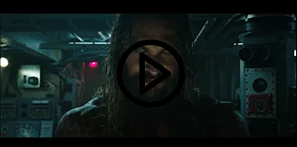

Suite à son film ayant fait succès au boxoffice, Aquaman est la nouvelle célébrité
parmi les super-héros. Créé en 1941 il est le roi d’Atlans, une cité sous-marine
abritant les Atlantes. Mais en tant que souverain des sept mers, il est considéré
comme responsable des déchets marins
que produit l’Atlans.
Qui est Aquaman ?
Aquaman est un super héros de la firme DC Comics
qui a fait sa première apparion dans la bande
dessinée More Fun Comics #73 publiée en novembre
1941.
Extrait de la bande-dessinée Aquaman, collecon DC renaissance
Aquaman alias Arthur Curry est né d’un père humain,
gardien de phare, et d’une mère nommée Atlanna, une
reine exilée du royaume d’Atlans. Mais le lancement
de la série Crisis on Infinite Earths en 1985 remet en
queson son passé. Aquaman serait né d’une
inséminaon arficielle entre un humain appelé Atlan et Atlanna puisque le Roi d’Atlans était dans
l’incapacité à en avoir. Ses cheveux blonds sont le
signe d’une malédicon ce qui amène le père d’Arthur
à l’abandonner.
Tout comme les Atlantes, Aquaman possède la
capacité de pouvoir respirer sous l’eau et de
communiquer avec la faune aquaque. Nageur ultrarapide, il possède une force surhumaine et des sens
surdéveloppés qui lui permee d’avoir un sonar en lui
ou de voir dans les profondeurs des abysses. De plus
ses capacités sont renforcées lorsqu’il est accompagné
du trident de Neptune
Extrait de la bande-dessinée Aquaman, collecon
DC renaissance
En tant que mi-homme mi-atlante, il est le roi légime
de la cité d’Atlans, mais est rejeté par tous, même par
Orm son frère, mais il parvient à reprendre son rôle du
roi des sept mers par la guerre
Adaptation cinématographique

Bande-annonce Aquaman, 2018
Le roi d’un cité polluante
Avant sa chute, Atlans était une cité connentale.
Malgré le fait qu’elle soit aujourd’hui située dans les
profondeurs et que la magie soit omniprésente,
Atlans est une ville semblable à d’autres métropoles :
une ville qui rejee de nombreux déchets.
La vie quodienne des Atlantes menace donc la pureté
et la biodiversité des océans. Roi des Atlantes et des
sept mers, Aquaman est considéré comme responsable
du problème.
Sort en 2018, le Blockbuster Aquaman met en avant
ce sujet, la polluon des milieux aquaques devient
une urgence.
Affiche du film Aquaman, 2018
“Je ne ressens pas spécialement le film comme
étant sermonneur mais on ne peut pas négliger
le sujet pour autant. On le menonne sans
forcément prendre par parce que c’est un sujet
important, qui est très réel.” Jason Momoa,
interprète d’Aquaman pour Melty.